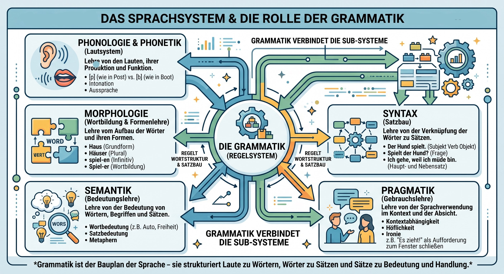

Was zählt überhaupt als Sprache?
- 🐝 Eine Biene zeigt anderen Bienen, wo Futter zu finden ist.
- 🐒 Ein Affe warnt seine Gruppe vor einem Adler.
- 🐕 Ein Hund bellt, wenn jemand vor der Tür steht.
- 🐦 Ein Vogel singt ein komplexes Lied.
- 👶 Ein zweijähriges Kind sagt: „Ball haben!“
- 🗣️ Ein Mensch sagt: „Wenn du gestern früher gekommen wärst, hätten wir den Zug noch erwischt.“
Persönliche Situationen
Erzählt von einer Situation, in der ein Tier verstanden hat, was ihr zu ihm gesagt habt.
Schaut euch das Video an und füllt die Lücken aus.
• Hunde kommunizieren selber sehr viel über : Über Mimik, Geste.
• Und die Menschen neigen leider dazu viel zu reden - was bei den Hunden dann als bla-bla-bla ankommt.
• Hund, Katze, Pferd können schon , dass wir kein Hund, keine Katze und kein Pferd sind.
• Wenn wir als Mensch da mit ins Spiel kommen, dann lernen sie uns als Lebewesen, die mit .
• Dabei Mensch und Tier oft sogar ähnlich - vor allem was die Körpersprache betrifft.
• Was er lernen kann, sind, einzelne Wörter mit zu verknüpfen.
• Wer ein Tier besitzt, sollte nie vergessen, dass es zwar sehr genau , was es von uns sieht und hört, aber nicht unbedingt versteht, was wir gerade meinen.
Eure Meinungen
Tieren wahrnehmen was wir sagen und können Wörter mit Handlungen zu verknüpfen.
Bedeutet das, dass sie können Sprache nutzen?
5. Levels of Language

Aufgabe:
Schaut euch das Schema an und beantwortet die Frage: Was ist der Unterschied zwischen einer Sprache und einem funktionalen Zeichensystem, das Informationen vermittelt?
Hört zu und antwortet:
- ● Wie unterscheidet sich tierische Kommunikation von menschlicher Sprache?
- ● Worin unterscheiden sich die kognitiven Fähigkeiten von Mensch und Tier?
- ● Wie nehmen Tiere abstrakte Konzepte wie Liebe oder Misshandlung wahr?
Persönliche Stellungnahme zum Thema
Welchen Stellenwert hat die Gesellschaft von Tieren für euch im Vergleich zur menschlichen Gesellschaft?
Inwiefern spielt es eine Rolle, dass Tiere keine menschliche Sprache verwenden können?